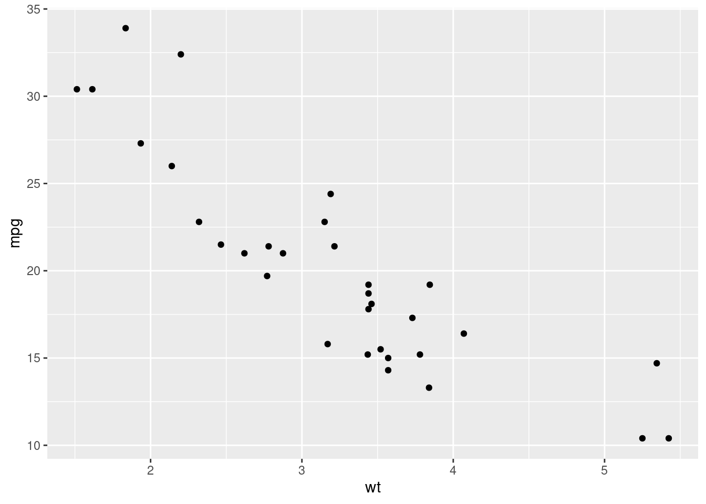
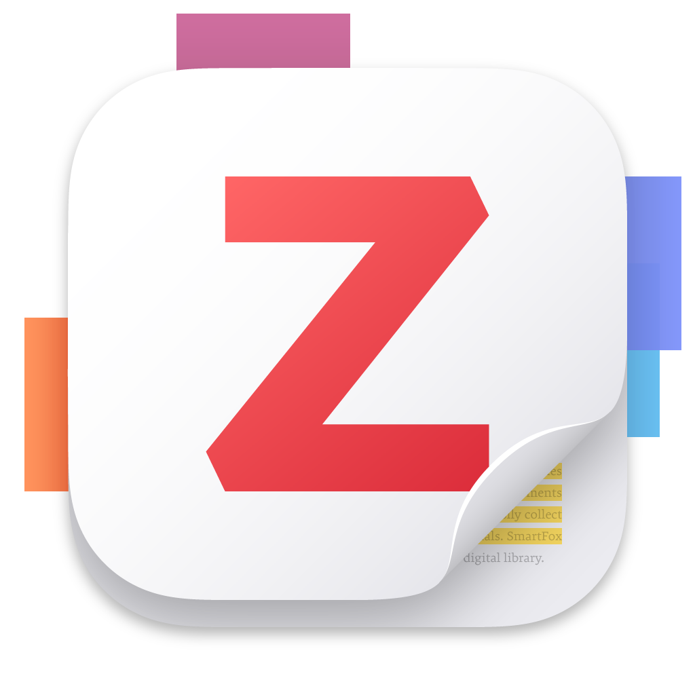

getwd()[1] "/home/runner/work/methodscamp.github.io/methodscamp.github.io"RStudio projects are an excellent way to keep all the files associated with a project (data, R scripts, results, figures, etc.) in one place on your computer.
This is one of the best ways to improve your workflow in RStudio, allowing you to:
To create a new project file, click File > New Project, then:


Call your project some version of “methodscamptest” and choose carefully where you wish to store the project on your machine.
If you don’t store your project (and your other files, too!) somewhere reasonable, it will be hard to find it in the future! We recommend creating a clear organizational scheme for yourself early on.
getwd()[1] "/home/runner/work/methodscamp.github.io/methodscamp.github.io"
Quit RStudio and check out the folder associated with the project.
.Rproj file for the project itself.Double-click the .Rproj file to reopen the project and pick up where you left off! Everything you need should be ready to go.
Overleaf is a collaborative cloud-based LaTeX editor designed for writing, editing, and publishing documents.
UT Austin actually provides free access to Overleaf Professional to all graduate students using your UT email.
Overleaf Professional upgrades include:
LaTeX is actually the markup language that powers this website! If you are curious about general syntax and commands, you can access our repository at any time to get a closer look.

Zotero is an open-source reference manager used to store, manage, and cite bibliographic references, such as books and articles.
When it is time to write, you can insert your sources directly into your paper as in-text citations via a word processor plugin, which generates a bibliography in your style of choice.
You can download the software for free here.
Zotero is one of many other reference managers out there. Alternatives include Mendeley and EndNote, among others. You should choose whatever option best suits your needs.
If you have not yet chosen a reference manager or are considering switching, below are some advantages of Zotero:
Here is a comprehensive guide to unlocking all of Zotero’s potential.
Scope and Methods of Political Science
Statistics II (Linear regression and more)
Statistics III (Maximum likelihood estimation)
Statistics/econometrics:
Formal Theory
Everything else
You can also take courses through the Economics, Mathematics, or Statistics (Statistics and Data Science) departments.
Software and Topic Short Courses - R, Python, Stata, etc.
Summer programs at UT:
Short courses in statistics
Summer programs outside UT:
ICPSR (Inter-university Consortium for Political and Social Research)
EITM (Empirical Implications of Theoretical Models)
IQMR (Institute for Qualitative and Multi-Method Research)